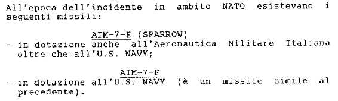
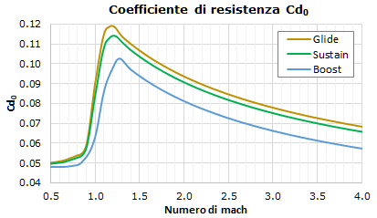

L'immagine d'apertura ben descrive l'oggetto di questa pagina. Infatti, qui viene trattato lo stesso scenario già visto nella pagina "Abbattimento tramite missili inerti", ma con specifico riferimento al sistema d'arma F-4 Phantom II e missile ATM-7F, dove la T di ATM indica che la testata bellica (esplosiva) del missile è stata sostituita con una telemetrica, usata durante le esercitazioni e prove di qualifica del missile.
Contrariamente a quanto avviene nel resto del sito, impostato prevalentemente per avere una connotazione divulgativa senza troppi tecnicismi, in questa pagina è necessario fare maggior ricorso a nozioni tecniche specialistiche, poiché la trattazione riguarda una possibile missione condotta da un F-4 armato con 2 o 4 Sparrow pianificata secondo i reali parametri d'impiego dell'aereo e del missile ricavati dai manuali dell'epoca e da testi tecnici che descrivono i circuiti elettronici e meccanici del missile Sparrow.
Al fine di snellire il testo, saranno evitate lunghe spiegazioni di base su speedgate, filtri di segnale, trigonometria, ecc. Il funzionamento degli apparati viene, comunque, descritto, dando, però, per scontata la competenza di base del lettore, così da saltare le nozioni di base che renderebbero esageratamente lunga e dispersiva questa trattazione.
INDICE
Principio di funzionamento dell'ATM-7F
Il missile è composto da alcuni macro-componenti a cui sono interfacciati vari sensori.
Durante il riscaldamento, il missile si sintonizza sulla frequenza di riferimento del radar dell'F-4

Stragi_031FL_02SR_005SS_0049UA_Vol01-allA.pdf
AIM-7F in dotazione alla US Navy
================================== ==================================
A prescindere dal regime di volo del DC-9 al momento dell'incidente, il costruttore deve garantire l'integrità della struttura anche nella condizione di volo più sfavorevole. Dalle formule, questo valore si ottiene per W più piccolo possibile.
Utilizzando le due formule, possiamo calcolare l'ordinata del punto F', corrispondente al fattore di carico di raffica per la velocità di crociera di progetto con l'aereo al peso a vuoto operativo, cioè senza carburante, pari a 22300 kg; condizione di volo inusuale, ma possibile.
Pur non conoscendo il valore esatto della pendenza della curva di portanza (il parametro a della formula per il calcolo di n), possiamo stimarlo tramite la formula di Helmbold-Diederich con correzione di compressibilità di Prandtl-Glauert: a ≈ 5,25 rad-1 attorno a mach 0,76. Ponendo W / S = 52,64 psf e V = 376 mph EAS (considerati 488 KTAS a 25000 ft), si ottiene K = 1,193, da cui n = 1 - 2,33 = - 1,33 g. La struttura, quindi, deve garantire l'integrità fino al carico ultimo nultimo = -1,33 x 1,5 = -2 g, soglia alla quale sono ammesse deformazioni permanenti, ma con la garanzia della tenuta strutturale per almeno tre secondi (v. CAR §4b.201c).
Sebbene VB (velocità di progetto per la raffica della massima intensità) sia inferiore a VC (appena vista), la velocità di raffica per VB è maggiore di quella per VC. Dobbiamo, quindi, verificare se n per VB superi quello appena calcolato per VC.
La VB viene riportata nel manuale dei velivoli con diciture del tipo "velocità di penetrazione in aria turbolenta" e per il DC-9 vale 285 KIAS. La combinazione di parametri più sfavorevole (cioè che richiede una struttura più robusta) la si ha per la quota di 25000 ft. Facendo tutti i calcoli si ottiene nultimo = -1,42 x 1,5 = -2,13 g; ed è, quindi, questo il valore che la struttura deve garantire.
Assumendo un carico ultimo di raffica pari a circa −2,13 g, determinato nelle condizioni più gravose di certificazione, è ragionevole ritenere che la capacità residua della struttura non sia notevolmente più alta. In assenza di dati sperimentali specifici del costruttore, valori dell'ordine di −2,5 g non possono essere considerati supportati dalla certificazione e appaiono verosimilmente superiori alla capacità strutturale attesa della cellula.
================================== ==================================
La nervatura posteriore accumula un'enorme quantità di energia elastica (funziona come una molla tesa al massimo). Quando si verifica la frattura di schianto (fast fracture), l'energia accumulata si libera istantaneamente.
Generazione della scheggia: Se il collasso della sezione flangiata o del pannello d'anima (web) avviene sotto carico massimo, la separazione violenta del metallo (specie se si tratta di leghe d'alluminio ad alta resistenza ma fragili alla propagazione come l'Ergal/7075-T6) può scagliare frammenti della nervatura stessa o le teste dei rivetti tranciati ad altissima velocità, trasformandoli in proiettili.
L'aletta del missile agisce come una ghigliottina o un punzone ad altissima energia cinetica. Impattando la nervatura, asporta e strappa letteralmente una porzione della lamiera d'anima o della flangia. Questo frammento strappato (la scheggia) acquisisce immediatamente una frazione significativa dell'energia cinetica del missile.
Effetto di Spallazione (Spalling): Anche se l'aletta non dovesse penetrare completamente la nervatura ma si limitasse a un impatto d'urto violentissimo, l'onda d'urto compressiva viaggerebbe attraverso lo spessore dell'alluminio della nervatura. Quando quest'onda raggiunge la superficie opposta (quella libera, rivolta verso l'interno/alto), si riflette come un'onda di trazione, superando il limite di rottura del materiale. Questo causa il distacco violento di schegge metalliche taglienti dal lato non colpito, le quali vengono proiettate in avanti e verso l'alto.
Al millisecondo zero, l'impatto ad altissima velocità genera un'onda d'urto compressiva ad altissima pressione all'interno della lega d'alluminio della nervatura. Questa onda viaggia alla velocità del suono nel metallo (circa $5000 \text{ m/s}$) muovendosi obliquamente in avanti e verso l'alto, seguendo la direzione del vettore d'impatto originario.
Quando l'onda compressiva raggiunge la superficie interna libera della nervatura (quella rivolta verso l'alto e l'interno della struttura della fusoliera), non trova più materiale da comprimere.
Per le leggi della dinamica dei continui, l'onda d'urto si riflette sulla superficie libera trasformandosi istantaneamente da onda di compressione a onda di tensione (trazione).
Poiché le leghe d'alluminio aeronautiche hanno una resistenza a trazione dinamica inferiore rispetto a quella a compressione, lo stress di trazione riflesso supera istantaneamente il limite di rottura del materiale. Il metallo si frattura "per scalzamento" sul lato opposto all'impatto.
La scheggia non si genera solo ed esclusivamente nella direzione esatta di provenienza del missile, ma si propaga formando un cono di proiezione (cono di spallazione) caratterizzato da un certo angolo di dispersione.
https://en.wikipedia.org/wiki/Spall
Resistenza Anisotropa: Il componente è estremamente forte contro i carichi di trazione e flessione che agiscono lungo le sue fibre metalliche. Tuttavia, è intrinsecamente più debole e "fragile" contro gli sforzi che tentano di separare queste fibre trasversalmente. Un impatto balistico perpendicolare o obliquo alla superficie (come quello dell'aletta del missile) agisce proprio per separare queste fibre trasversalmente, dove il materiale ha una minore tenacità dinamica.
L'ingrandimento mostra nel dettaglio la fase di transizione da boost a sustain. Questa fase dura 250 ms

Il grafico comprende l'attrito superficiale e la resistenza d'onda del corpo, ali e coda tutto ad incidenza nulla.
La curva Coast (glide) del grafico racchiude già l'attrito superficiale (skin friction), la resistenza d'onda (wave drag) e il massimo sbarramento della base mozza (base drag power-off).
La curva Boost racchiude già l'attrito superficiale, la resistenza d'onda e il base drag ridotto dal getto del motore (power-on).
Dal grafico risulta consigliabile effettuare il lancio ad una velocità più alta di quella del picco in boost.
Descrizione autopilota
Dal punto di vista dell'effetto pratico sulla dinamica del missile, l'A/P si comporta in modo analogo ad un controllore PID (Proporzionale-Integrale-Derivativo). Tuttavia, dal punto di vista accademico e strutturale, non si tratta di un PID classico, ma di un'architettura più raffinata, nota come PI con retroazione del rateo (o rate feedback, v. Introduction to Control Systems, fig. 9-4).
Il simulatore implementa un AP a loop in cascata:
un loop esterno (PI) che controlla l'accelerazione, quindi la traiettoria;
un loop interno (D) che misura la velocità angolare, fornendo lo smorzamento necessario alla dinamica rotazionale.
Facciamo un esempio pratico. Supponiamo che l'A/P determini che sia necessario generare, tramite le ali, un'accelerazione superiore a quella attualmente sviluppata. Vediamo come intervengono le tre componenti del controllo:
P: aumenta l'inclinazione delle ali di una quantità proporzionale all'errore di accelerazione, cioè alla differenza tra l'accelerazione desiderata e quella effettivamente sviluppata in un dato istante;
I: se l'accelerazione continua ad essere inferiore a quella desiderata, incrementa progressivamente il comando per eliminare l'errore residuo;
D: se la velocità angolare del corpo del missile (il rateo di rotazione) è troppo alta, introduce uno smorzamento opposto al moto, riducendo la rapidità di variazione per evitare oscillazioni.
La parte I del controllore può essere causa di un potenziale problema.
Se siamo in quota e la densità dell'aria non è sufficiente a generare l'accelerazione desiderata, a causa della ridotta pressione dinamica, l'A/P può arrivare a saturare il comando delle ali. Tuttavia, il circuito integratore continua ad accumulare l'errore e quindi a richiedere un ulteriore incremento del comando, anche se le ali hanno già raggiunto il limite massimo. L'accumulo di questo termine può portare lo stato dell'integratore a valori fittizi sempre più elevati, anche molte decine di gradi. Questo fenomeno è noto come windup.
Nel momento in cui l'A/P dovesse comandare la riduzione dell'incidenza delle ali, il termine integrale non può rientrare immediatamente nei valori necessari, perché deve prima smaltire tutto l'errore accumulato. Di fatto, il comando può quindi rimanere a lungo in saturazione, introducendo un ritardo del tutto inaccettabile nella risposta del sistema.
Per ovviare a questo problema, interviene l'anti-windup: quando l'ala è satura alla massima inclinazione, l'azione integrale del PID non viene ulteriormente incrementata, ma viene congelata (comportamento chiamato "integrazione condizionale"). Così facendo, quando l'A/P comanda una riduzione dell'incidenza, il comando può rientrare rapidamente dal limite di saturazione e il servo associato all'ala può iniziare a ridurre l'incidenza senza dover prima smaltire un grande accumulo del termine integrale.
Anche la parte proporzionale può essere causa di un potenziale problema.
Se, infatti, l'A/P determina che le ali debbano generare un'accelerazione molto maggiore di quella attualmente sviluppata, il comando proporzionale può essere talmente elevato da portare la cerniera di una o più ali a fondo corsa con estrema rapidità, con il rischio di generare danni meccanici.
Al fine di ridurre drasticamente tale rischio, l'inclinazione delle ali è caratterizzata da due limiti: quello elettronico di 20° e quello meccanico di 22°; questa differenza di 2° viene chiamata headroom.
Oltre a ridurre il rischio di sollecitare eccessivamente la cerniera delle ali, l'headroom rende possibile il governo del missile anche quando le ali hanno raggiunto il limite elettronico di 20°, lasciando al rate loop (il loop interno derivativo che controlla lo smorzamento) il margine necessario per contrastare eventuali oscillazioni. Infatti, nel caso in cui il missile fosse soggetto a un disturbo improvviso (turbolenza dell'aria, disturbo a un sensore, ecc.), quei 2° di margine consentono di applicare piccole correzioni per compensare disturbi di modesta entità e, allo stesso tempo, permettono al rate loop d'intervenire per smorzare le oscillazioni anche con il comando nominalmente saturo a 20°.
==============================================
Simulazione del missile
- Gradi di libertà
Questo tipo di simulazioni consiste nel far muovere l'oggetto simulato fissando una condizione iniziale che viene propagata nel tempo (avanti o indietro) applicando le leggi della fisica.
È chiaro che per muoversi in uno spazio tridimensionale, un oggetto deve essere libero di spostarsi lungo i tre assi X, Y e Z, deve, cioè, avere 3 gradi di libertà o GdL o DoF (Degrees of Freedom).
L'oggetto così simulato viene considerato un punto materiale avente le caratteristiche fisiche dell'oggetto reale (come massa e superficie). In questo tipo di simulazione si assume che l'oggetto segua istantaneamente la traiettoria e applichi istantaneamente i comandi aerodinamici (nel caso di un oggetto capace di manovrare).
Questo modello è chiaramente il più semplice possibile e in questo rientrano tutte le simulazioni fatte da periti e consulenti per determinare le traiettorie di caduta dei rottami del DC-9 (introducendo, a volte, ulteriori semplificazioni ad un modello già di base).
Anche l'altra simulazione presente nella pagina "Abbattimento tramite missili inerti" rientra nel 3-DoF. Quindi, sebbene sia una simulazione che tiene in considerazioni molti dettagli del missile, è pur sempre limitata dal fatto che la risposta delle ali è immediata, il missile non deve "perdere tempo" ad inclinarsi prima di virare, l'AP riceve dati esenti da disturbi (quindi non soggetti a filtraggio), ecc.
Facendo il gradino successivo sia arriva al 5-DoF o pseudo-5-DoF, in cui vengono considerate le 3 traslazioni lungo gli assi più altri 2 GdL dell'assetto: alto/basso e destra/sinistra. Se questi 2 GdL aggiuntivi vengono calcolati in modo non rigoroso, cioè evitando d'includerli nello stesso processo d'integrazione usato per le altre variabili di stato, si ottiene un modello che ha "quasi" 5 GdL o pseudo-5-DoF.
Passando al livello successivo, si arriva al modello completo 6-DoF, dove alle 3 traslazioni lungo gli assi cartesiani si aggiungono 3 rotazioni intorno agli assi. Questo modello simula il comportamento del missile in modo molto accurato, in base ai parametri forniti alla simulazione; ciò significa che se i parametri rispecchiano fedelmente il missile reale, la simulazione riprodurrà il comportamento del missile in modo pressoché indistinguibile da quello vero, ma se i parametri usati differiscono da quelli reali, sarà simulato in modo quasi perfetto un missile di fantasia.
- Codice usato per il sito
Lo sviluppo del codice che simula il funzionamento del missile è avvenuto in tre fasi: la prima è una simulazione chiamata pseudo-5-DoF (risultata soddisfacente alla 14a versione sviluppata), mentre la seconda (usata per presentare i risultati in questa pagina) è la canonica simulazione 6-DoF, risultata soddisfacente e definitiva alla 17a versione.
sequenza:
in modalità CAA sim può agganciare un bersaglio fino a +45° in elevazione
il caccia cabra fino a scoprire il seeker dalla fusoliera
AGGANCIO
https://www.radartutorial.eu/17.bauteile/bt21.it.html
La variazione di frequenza del segnale radar trasmesso dal caccia può essere calcolata tramite la formula presente nella pagina di "RADAR e SIF → Radar di sorveglianza" https://en.wikipedia.org/wiki/Doppler_radar#Frequency_variation
fr = ft · (c + v) / (c - v), dove fr è la frequenza ricevuta dal seeker del missile, ft è la frequenza del segnale radar trasmesso dal caccia, c è la velocità del segnale nell'aria e v è la velocità radiale .
Per stabilire l'azimut dell'intercettore rispetto al DC-9, si può fare affidamento alla Perizia medico-legale Giusti, dalla quale, a partire dalla seconda metà di pag. 8, si legge che il DC-9 ha subìto una decompressione esplosiva prodotta da una falla apertasi nella parte destra della fusoliera a causa di un agente esterno (missile o collisione). Nello scenario ipotizzato in questa pagina, quindi, la falla è stata generata da un missile (verosimilmente il 2° lanciato) che ha impattato la parte destra della fusoliera del DC-9. Questo implica che l'attacco sia stato sferrato dai settori sud-ovest/nord-ovest.
I grafici che seguono permettono di selezionare alcuni azimut di lancio tra quelli più probabilmente utilizzati. Per ogni azimut sono disponibili 4 profili caratterizzati da 2 parametri di lancio: l'angolo di salita o di rampa del caccia al momento del lancio (per brevità indichiamolo come angolo S per "salita") e l'angolo di anticipo della traiettoria del DC-9 al momento del lancio (indichiamolo come angolo A per "anticipo").
Normalmente questi due angoli vengono impostati dal pilota seguendo le indicazioni presentate dal computer di tiro sullo schermo radar nel caso di F-4 e F-104S o sull'HUD nel caso dell'F-15.
Tuttavia, usando la girobussola e l'orizzonte artificiale, il pilota è libero d'impostare anche altri angoli di lancio precalcolati, ignorando le indicazioni del radar di tiro, purché il lancio avvenga all'interno dell'ASE (il link si riferisce ad un gioco di simulazione, ma serve solo per capire di cosa si sta parlando).
Il significato del nome dei profili d'ingaggio selezionabili è il seguente:
TOF: il programma che esegue le simulazioni trova i due angoli S e A che riducono al minimo il tempo di volo del missile;
ACC: il programma trova i due angoli S e A che riducono al minimo l'accelerazione comandata dall'A/P del missile al momento del lancio;
TOF / 10: come per il profilo "TOF", ma l'angolo A è vincolato al valore fisso di 10° (quindi il programma varia solo S);
Av / 15: il programma trova l'angolo S che rende massima l'accelerazione verticale che il missile imprime al DC-9 (cioè che crea il massimo danno) mantenendo A fisso a 15°, ciò significa trovare il massimo valore di Vr × sen(β) al momento dell'impatto, dove Vr è la velocità relativa tra il missile e il DC-9 e β è l'angolo di salita del missile (S indica tale angolo al momento del lancio).
Il vincolo dei 10 e 15 gradi sull'angolo A serve per considerare profili di lancio realistici nei quali il fascio del radar di tiro non è ad una distanza angolare dal bersaglio troppo elevata. Senza questo vincolo, il programma che fa le simulazioni potrebbe trovare traiettorie di lancio distanti 30/40 gradi dal DC-9, con il risultato che quel profilo d'ingaggio sarebbe, in realtà, puramente teorico, poiché il radar di tiro potrebbe essere al di fuori del cono d'aggancio del bersaglio (indicato dal cerchio ASE).
Arriviamo, finalmente, al risultato ottenuto da varie simulazioni.
Il grafico di sinistra mostra la traiettoria seguita dal missile, mentre gli altri mostrano alcuni parametri che aiutano a visualizzare l'evoluzione della traiettoria (si veda più avanti per il significato dei valori).
Scegliere un profilo d'ingaggio:
Mostra acc. A/P L'aggiornamento dei grafici potrebbe richiedere qualche secondo.
Azimut intercettore rispetto al DC-9 : °
Angolo di rampa al lancio : °
Angolo di anticipo traiettoria : °
Angolo missile / DC-9 al lancio : °
Tempo di volo : s
Spazio percorso dal missile : m
Velocità comandata dall'A/P del missile: m/s
Energia sviluppata dall'impatto : MJ
Angolo di rampa del missile all'impatto: °
Tempo di trasmissione energia all'ala : 0,5Accelerazione verticale DC-9 : g
Il grafico 3D (il primo a sinistra) mostra il DC-9 con i puntini blu e il missile con quelli rossi. La linea viola rappresenta il muso dell'intercettore (l'asse +X) al momento del lancio. Le linee arancioni rappresentano il vettore accelerazione comandato dall'A/P; la lunghezza delle linee è proporzionale alla magnitudine (o modulo) dell'accelerazione.
Spiegazione dei valori mostrati:
Azimut intercettore rispetto al DC-9: angolo misurato nel piano orizzontale (X-Y) compreso tra il nord geografico del DC-9 e la congiungente DC-9/intercettore passando per est (azimut = 90°), sud e ovest; v. anche Wikipedia.
Angolo di rampa al lancio: angolo di salita del caccia al momento di lanciare (angolo S).
Angolo di anticipo traiettoria: angolo in azimut tenuto dall'intercettore al momento del lancio per anticipare la traiettoria del DC-9 (angolo A). Se, ad esempio, l'azimut di lancio è 260° e A è 10°, significa che il lancio avviene con il caccia che punta esattamente verso est: 260 - 180 + 10 = 90° (90° è appunto est).
Angolo missile / DC-9 al lancio: angolo compreso tra l'asse X del caccia e la linea di vista al momento del lancio.
Tempo di volo: tempo che il missile impiega per impattare il DC-9. Viene calcolato (in modo approssimativo) dal computer asservito al radar di tiro del caccia.
Spazio percorso dal missile: lunghezza della traiettoria seguita dal missile per impattare il DC-9. Dividendo questo valore per il tempo di volo si ottiene la velocità media del missile.
Velocità comandata dall'A/P del missile: formalmente è l'integrale dell'accelerazione comandata dall'A/P in funzione del tempo di volo, il che significa moltiplicare l'accelerazione per il tempo, ottenendo, appunto una velocità. In pratica serve per mettere in evidenza l'entità delle correzioni di rotta apportate dall'A/P. Dividendo questo valore per il tempo di volo si ottiene l'accelerazione media comandata dall'A/P.
Energia sviluppata dall'impatto: energia cinetica sviluppata dall'impatto del missile con il DC-9 ipotizzando il completo arresto del missile che urta il carrello. Un missile che trapassa la fusoliera rilascia all'aereo un'energia molto più bassa, proporzionale al quadrato della differenza tra la velocità in ingresso in fusoliera e quella in uscita.
Angolo di rampa del missile all'impatto: stesso significato di "Angolo di rampa al lancio", ma riferito al momento dell'impatto (angolo β). I due angoli sono differenti a causa dell'intervento dell'A/P. Questo angolo determina la componente verticale dell'accelerazione dovuta all'energia cinetica sprigionata dall'impatto.
La spiegazione dei valori "Accelerazione verticale DC-9" e del relativo "Tempo di trasmissione energia all'ala" necessitano di una trattazione più approfondita, in quanto sono i valori che determinano la rottura del troncone della semiala sinistra.
L'accelerazione dal basso verso l'alto è dovuta all'azione del missile che urta il carrello. Per calcolarla si può utilizzare la banale formula a = V / t, in cui V è la velocità impulsiva impressa al DC-9 dal missile e t è il tempo nel quale si presume che l'energia venga trasferita dal carrello alla struttura, in particolare ai longheroni alari. Questo tempo è preimpostato a 0,3 s (valore prudenziale), ma è possibile variarlo con l'apposito slider. Ciò è utile in quanto non è possibile stabilire con precisione questo valore, ma considerando un'accelerazione così impulsiva, è più verosimile un tempo di trasferimento più basso, in quanto la struttura degli aerei dell'epoca era piuttosto rigida (probabilmente il tempo più vicino alla realtà è intorno a 0,1/0,2 s).
Il valore di V lo si ottiene da quello dell'energia cinetica sprigionata dall'impatto, semplicemente calcolando la radice quadrata di Ec * 2 / 32800, dove 32800 è la massa (in kg) del DC-9 ipotizzabile al momento dell'abbattimento, determinata secondo quanto riportato nei documenti "UDIENZA DEL 15.05.2003" a pag. 60 ("il peso del DC9 in crociera e di circa trentatremila chili") e "Capitolo XLVI - Consulenza tecnica Bazzocchi - 09.06.94." a pag. 14 ("Peso totale nelle condizioni dell’evento kg 32555", sottostimato in quanto è la massa prevista all'atterraggio nel foglio di carico).
La componente verticale della V così calcolata è quella che genera l'accelerazione verticale impulsiva mostrata in "Accelerazione verticale DC-9". Quest'accelerazione, se sufficientemente elevata, determina il superamento del fattore di contingenza negativo (nz < 0 del link) causando danni strutturali che vanno dalla deformazione permanente di alcuni elementi strutturali fino alla rottura di quelli più sollecitati (come accaduto alla semiala sinistra).
Ora che abbiamo dati numerici sufficientemente accurati sui quali ragionare, si può ipotizzare quale profilo d'ingaggio possa essere stato pianificato ed usato per abbattere il DC-9.
È intuibile che il massimo danno lo si ottiene sparando il missile esattamente nel senso opposto al moto del DC-9 (sparandolo, cioè, da sud verso nord), così da farlo impattare con la massima velocità relativa possibile.
Un'altra modalità più "comoda" può essere quella di un attacco quasi esattamente da ovest, ipotizzando che l'intercettore sia partito dalla Sardegna (o anche dalla Corsica).
Visualizzando uno dei profili con azimut 180° e uno con azimut da ovest da 250° in poi, si nota una cosa che rende del tutto sconsigliabile il lancio da sud: l'accelerazione comandata dall'A/P al momento dell'impatto è esattamente verticale, mentre con il lancio da ovest l'accelerazione è quasi orizzontale.
Con l'aiuto di questa immagine (raffigurante un DC-9-15, come l'I-TIGI) si può visualizzare chiaramente che l'area esposta dall'aereo frontalmente è molto inferiore di quella esposta lateralmente.
Il missile che accelera verticalmente nell'attacco frontale ha un piccolo margine d'errore, dovuto proprio alla piccola sezione frontale dell'aereo. Se, invece, l'attacco espone bene la fusoliera, con il missile che accelera orizzontalmente (verso destra), incrementando la componente della velocità verso la prua del DC-9, il margine d'errore è molto più grande, in quanto il missile dispone di parecchi metri di fusoliera prima di mancare il bersaglio.
In sintesi, quindi, uno stesso errore di guida del missile porta ad una probabilità di mancare il bersaglio molto maggiore per l'attacco frontale che non per quello laterale. Si può, quindi, agevolmente dedurre che il lancio sia avvenuto da un azimut prossimo a ovest (270°).
Questo fatto consente anche di poter ipotizzare che uno dei due missili lanciati contro il DC-9 sia andato a finire più avanti della zona di massima riflettività (costituita dall'ala), proprio perché l'A/P stava facendo virare il missile a destra, cioè in avanti rispetto alla traiettoria del DC-9, incrementando sempre di più la componente della velocità verso destra. È, dunque, plausibile che uno dei due missili, impattando il DC-9 davanti all'ala abbia causato la violenta decompressione di cui parla il perito Giusti e abbia, inoltre, causato l'interruzione delle due barre (destra e sinistra) che portano l'energia elettrica dai motori e dall'APU ai vari apparati, si veda "Capitolo XLVIII - Perizia tecnico-scientifica Misiti ed altri - 23.07.94." alle pagg. 30 e segg., in cui si precisa che la prima barra ad interrompersi è stata quella di destra.
Considerando, inoltre, che soltanto una semiala si è rotta, l'accelerazione verticale non doveva essere molto superiore al limite strutturale. Si può quindi ipotizzare che il lancio possa essere avvenuto da un azimut di circa 250/260°. Sono quasi certamente da escludere azimut superiori a 280° a causa della scarsa accelerazione verticale che avrebbero prodotto.
Ulteriori simulazioni permettono di affermare che anche lanci da 6 km di distanza consentono di generare sufficiente energia cinetica all'impatto, purché effettuati da un azimut inferiore ai 250°.
Stesso discorso anche per velocità di lancio più basse. Una velocità di lancio di mach 0,9 è sufficiente, purché l'azimut non superi i 250°.
Si tenga, però, presente quanto già detto, cioè che l'impiego di versioni più recenti dello Sparrow, grazie alle migliori prestazioni, avrebbero consentito il lancio da maggiore distanza e da azimut ben superiori ai 280°.
Zona d'impatto del 1° missile
Una volta analizzati i risultati delle simulazioni e avendo stabilito che un attacco di questo tipo doveva essere condotto da azimut laterali rispetto al DC-9 (nel nostro caso da ovest), si possono prendere in considerazione ulteriori elementi oggettivi utili per determinare la probabile zona d'impatto del primo missile.
Nel seguito, quando si fa riferimento alla commissione Luzzatti s'intende la relazione Luzzatti e quando si fa riferimento al collegio Blasi s'intende questa parte della perizia Blasi.
Ulteriori utilissime informazioni sulla struttura di un DC-9 si trovano nella pubblicazione "DC-9 Safe Bomb Location Study" della McDonnell Douglas relativa ad uno studio fatto per trovare la posizione all'interno di un DC-9 dove far esplodere una bomba col minor danno possibile, alla quale ci si riferirà con "RD-72-88".
Di particolare utilità sono lo "spaccato" del DC-9 a pag. 14, il diagramma delle stazioni a pag. 16 e il disegno del cono d'emergenza a pag. 27, ma è comunque molto utile scorrere la pubblicazione nella sua interezza.
Prima di addentrarci nei dettagli tecnici, vale la pena sottolineare che la relazione Luzzatti costituisce una preziosa fonte d'informazioni, poiché è stata redatta quando ancora non esistevano le influenze esterne che hanno pesantemente condizionato le perizie a partire da quella prodotta dal collegio Blasi.
Il giudice Priore descrive molto dettagliatamente gli inquinamenti peritali nel "Capitolo LXII - Inquinamento peritale." della sua Ordinanza di rinvio a giudizio - Sentenza istruttoria di proscioglimento; vediamone un passo significativo:
Le attività dei periti incaricati nel tempo delle perizie principali – quelle cioè in cui si formulavano quesiti sulle cause del disastro, e quindi i membri del collegio Blasi e di quello Misiti – sono state non poche volte disturbate da interferenze, ed anche inquinate da interventi di ambienti di imputati e consulenti di parte dell’AM; interferenze ed interventi generati da rapporti e collegamenti tra periti d’Ufficio ed ufficiali dell’Arma detta, che a volte hanno determinato nei primi, per insipienza infedeltà incapacità morali e conoscitive, degli stati di subordinazione e dipendenza in totale contrasto con il dovere di assoluta indipendenza d’ogni ufficio del Giudice.
I rapporti del coordinatore del collegio Blasi, cioè l’ingegnere Massimo Blasi, con ambienti dell’AM sono provati dalla trascrizione di conversazione telefonica avvenuta il 3.03.89 tra di lui e il Sottocapo di Stato Maggiore all’epoca, cioè il generale Meloni. [...]
Nei confronti del collegio successivo, il Misiti, l’impegno [dei periti a collaborare con gl'imputati, ndr] è di gran lunga superiore, con ogni probabilità a causa del superiore peso della partita, che vede i più alti gradi del tempo dei fatti in ruoli di imputati di reati gravissimi.
Non è, quindi, il caso d'ignorare la relazione Luzzatti pensando che sia stata resa obsoleta dalle nuove perizie, perché non è affatto così. Per cui nei prossimi paragrafi saranno presi in considerazione gli elementi oggettivi che con certezza sono stati riscontrati dalla commissione senza interferenze esterne (o comunque ridotte al minimo).
Questo frammento fu preso in seria considerazione dalla commissione Luzzatti perché venne rinvenuto conficcato nella coscia sinistra di una bambina (Francesca D'Alfonso) pur appartenendo ad un elemento strutturale esterno alla cabina passeggeri. Sebbene questo fatto sia utile per spiegare alcune delle cose successe al momento del disastro, nessun'altra commissione ha mai più preso in considerazione questa scheggia. Il collegio Blasi la nominerà solo per sminuirne notevolmente l'importanza.
Le cose sono due: o la scheggia è effettivamente priva di qualunque importanza, oppure ne ha fin troppa. Cerchiamo di ragionare senza preconcetti per capire come stanno veramente le cose.
Un pannello trapezoidale è un elemento strutturale molto robusto in lega leggera, saldamente vincolato ad una semiala e alla fusoliera. La sua funzione è di conferire alla semiala una maggiore libertà di movimento (aggiunge 1 grado di libertà alla giunzione ala-fusoliera), consentendo una migliore distribuzione dei carichi tra la semiala e la sezione di fusoliera a cui l'ala è agganciata. Per ulteriori dettagli si può consultare questa descrizione di un pannello brevettato.
Alla seconda [salma, ndr], una bambina nata nel 73, [...], era stata estratta dalla coscia sinistra una scheggia. Questo reperto era stato esaminato dall'AM, e dall'NTSB negli Stati Uniti, e riferito alla centina posteriore di sinistra esterna del pannello trapezoidale P/N 9957447-3 posto all'attacco alare.
Iniziamo in ordine cronologico dalla Luzzatti, prendendo in considerazione le descrizioni presenti a pag. 59:
tale frammento [del pannello trapezoidale sinistro, ndr], rinvenuto nel corpo di una passeggera, è stato identificato come parte della nervatura posteriore esterna del pannello in oggetto.
Il frammento presenta una impronta sullo spigolo posteriore ed una sezione di frattura avente le caratteristiche di una rottura dinamica.
Inoltre, dall'aspetto della superficie di rottura, questa risulta essere iniziata lungo il contorno dalla parte dell'impronta.
Il frammento, pertanto, deve essersi distaccato perché colpito violentemente dal dietro verso l'avanti, in corrispondenza dell'impronta sopraccitata.
La commissione aggiunge:
Durante un sopralluogo effettuato da membri della commissione a bordo di un velivolo DC 9, è risultato che l'impronta di cui sopra si adatta al contorno della
parte anteriore della rotaia del flap sinistro.
dando per scontato che il frammento deve per forza aver urtato la rotaia:
Considerando che in volo di crociera l'estremità della rotaia del flap si trova avanzata ed esterna rispetto alla zona di frammentazione del pannello, quest'ultima ha richiesto almeno una fase precedente che consentisse un posizionamento di possibile interferenza.
Inoltre, benchè la zona interessata dalla frammentazione sia avviluppata da componenti strutturali massicci e separata dalla cabina passeggeri, tenuto conto che sul frammento non vi sono altri segni di urti o sfregamenti e che lo stesso è stato rinvenuto nel corpo di una passeggera, è evidente che al momento dell'urto rotaia-pannello non sussistevano ostacoli al movimento relativo frammento-passeggera.
Il ragionamento è tanto superficiale quanto contestabile: siccome l'impronta si adatta alla rotaia del flap, sicuramente il frammento ha urtato tale rotaia.
La superficialità del ragionamento è indirettamente evidenziata dal collegio Blasi, che, infatti, non fa alcun cenno all'arbitrario vincolo imposto dalla commissione Luzzatti (v. "PARTICOLARE 5" a pag. 51):
L'esame a vista delle superfici di rottura, ha messo in evidenza i caratteri dinamici di tale rottura [rottura dinamica confermata anche da questo collegio, ndr], così come la presenza di una forte ammaccatura, probabilmente provocata dall'urto violento con altre parti molto robuste del velivolo, che è stata quindi la causa del distacco di tale pezzo dall'organo meccanico integro cui apparteneva.
È quindi evidente che Blasi non parla di un urto contro la rotaia del flap, ma semplicemente di "altre parti molto robuste del velivolo", dal momento che l'ammaccatura può essere stata causata dall'urto con uno degli elementi strutturali che circondano il pannello trapezoidale o anche dall'impatto col missile.
L'argomento viene ripreso con maggiore dettaglio a partire da pag. 157 della perizia, senza, però, aggiungere informazioni particolarmente utili. Risulta, invece, utile evidenziare il fatto che questo collegio, pur prendendo in considerazione la vicinanza del pannello alla rotaia del flap, giunge a conclusioni differenti da quelle a cui giunge la commissione Luzzatti. Infatti, a pag. 159 il collegio Blasi scrive:
Dalle indagini frattografiche effettuate, (AMI e NTSB), risulta evidente che il frammento si è staccato dal pezzo madre per rottura dinamica, quindi in seguito all'urto con un elemento strutturale di massa e rigidezza elevata; d'altronde è evidente una grossa ammaccatura sul frammento, molto probabilmente prodotta in seguito all'urto. Dalle foto N. 220 - 221 - 222 si evidenzia la vicinanza del frammento, nella sua posizione originaria sul pannello trapezoidale, ad almeno due grossi elementi strutturali:l'estremità della rotaia di scorrimento del perno del flap interno e l'attacco dell'elemento di supporto trasversale del carrello d'atterraggio.
Pervenendo ad una conclusione ben diversa da quella data per scontata dalla Luzzatti:
Durante il volo il carrello si trova in posizione retratta e non è detto che l'urto possa essere avvenuto con altri grossi elementi facenti parte del complesso del carrello stesso.
o con un missile inerte, verrebbe d'aggiungere.
Ad ogni modo, è importante sottolineare che Blasi non dà affatto per scontato l'urto del frammento con la rotaia del flap, pur prendendola in considerazione.
Tutto ciò dimostra oggettivamente che la scheggia è stata generata dall'urto violento tra la nervatura posteriore del pannello trapezoidale sinistro e un altro oggetto non meglio identificato, che potrebbe essere un elemento strutturale dell'aereo o un oggetto estraneo all'aereo avente energia sufficiente per generare la scheggia.
Per stabilire se un missile lanciato all'incirca da ovest possa aver generato la scheggia, cerchiamo di trovare la posizione esatta della nervatura del pannello aiutandoci con i seguenti schemi.
Questa parte della semiala sinistra di un DC-9-15 mostra il semi-cassone alare all'interno del tratteggio verde (è la parte dell'ala inglobata nella fusoliera) e il longherone posteriore con evidenziata la zona di "aggancio" del carrello sinistro.
Il dato d'interesse è la posizione del punto d'aggancio del longherone posteriore alla fusoliera: stazione 577,4. È questo il punto in cui viene fissato il pannello trapezoidale.
Lo schema è anche utile per farsi un'idea del carico a cui è soggetto il longherone posteriore e, di conseguenza, il pannello trapezoidale al quale è fissato.
Nell'RD-72-88 si osserva che tale stazione si trova a 570,4" (pollici) dal vertice del radome (la punta della prua), come mostrato dal seguente schema.
Qui vediamo i due longheroni con tratto verde e la posizione del pannello trapezoidale, situato all'interno dei due cerchi rossi. Più precisamente, i due cerchi indicano la posizione della nervatura posteriore del pannello trapezoidale, situata a circa 30 cm dalla stazione 577,4 (v. disegno seguente).
Questo schema presente a pag. 158 della perizia Blasi mostra nel dettaglio gli elementi strutturali a cui viene fissato il pannello trapezoidale (la prua è verso destra).
È anche evidenziata la parte del pannello dalla quale è partita la scheggia.
La stazione in cui è ubicata l'ordinata di forza è facilmente deducibile osservando lo schema che segue.
Questa parte dello schema delle stazioni di fusoliera consente di stabilire che l'ordinata immediatamente dietro al longherone posteriore è posizionata alla stazione 585.
L'immagine evidenzia anche l'ordinata di forza alla stazione 642, che collega il tronco di coda al cassone alare.
Qui vediamo una rappresentazione "artistica" dell'ubicazione dei vari elementi visti negli schemi precedenti.
Tra tutti quei rottami, il posizionamento delle linee non può essere preciso al centimetro, ma è molto significativo poter constatare la netta apertura proprio in corrispondenza della stazione 585, come se "qualcosa" avesse indebolito l'ordinata da dove è partita la scheggia, sbriciolando la corrispondente parte di fusoliera.
In questo schema, infine, tratto dalla pag. 100 della perizia Blasi, si può accertare la perfetta compatibilità della posizione dei sedili con la proiezione della scheggia conficcatasi nella coscia sinistra della bambina, senza bisogno di complicare le cose con complesse (ed indimostrabili) interferenze tra elementi strutturali che urtano il pannello trapezoidale al momento del collasso in mare.
Considerando, infatti, che la nervatura posteriore del pannello trapezoidale è situata circa 20 cm dietro la stazione 585, la scheggia è stata scagliata quasi esattamente a metà dello spazio libero tra le due file di sedili (ovviamente dopo aver tagliato il pavimento) compiendo una corsa di circa 50/60 cm.
Si può, quindi, agevolmente stabilire che il primo missile ha colpito l'aereo a non più di qualche decina di centimetri dal pannello trapezoidale, scagliando il frammento a seguito dell'urto diretto con il corpo del missile o con un'aletta.
Caduta e impatto con il mare
A prescindere dalla causa che ha generato il disastro, le perizie concordano sulla perdita in quota del troncone lungo 5 m della semiala sinistra e probabilmente questo è l'unico fatto certo tra tutti quelli descritti nelle varie teorie di destrutturazione.
Alcuni periti azzardano anche la perdita di tutto il tronco di coda, che si sarebbe distaccato dalla parte centrale della fusoliera a partire dal bordo d'uscita dell'ala, alla stazione 642, dove è presente l'ordinata di forza che collega il tronco di coda al cassone alare.
Questa ipotesi viene avanzata dal collegio Misiti dopo aver consultato la documentazione fornita dalla McDonnell Douglas. Le conclusioni che ne scaturirono furono (v. "Capitolo CIII - Note di conclusione Casarosa - Held. 08.04.99." a pag. 6):
In PT [perizia tecnica del collegio Misiti, ndr] era stato riportato che l'esame della documentazione fornita dalla Mc Donnell-Douglas aveva consentito di rilevare che i predetti elementi
[l'ordinata alla stazione 642 e il sistema di vincolo del tronco di coda alla parte posteriore della fusoliera, ndr]
apparivano elementi critici del velivolo quando esso è sottoposto a condizioni di carico derivanti da manovra bilanciata al massimo valore del fattore di carico di manovra e raffica.
"In altre parole, se il velivolo viene sottoposto a condizioni di carico derivanti dal superamento del massimo valore del fattore di carico a causa di effetti combinati di manovra e raffica, su di esso agiscono accelerazioni e, quindi, carichi inerziali che, in aggiunta a quelli di esercizio, possono essere tali da determinare il cedimento della struttura del velivolo in corrispondenza dei predetti elementi critici. Sulla base di queste considerazioni, e come riportato in PT, può pertanto formularsi la plausibile ipotesi che, al momento dell'incidente, il velivolo sia andato soggetto alle predette condizioni di carico che, attraverso il cedimento degli elementi critici della struttura del velivolo, abbiano poi innescato la sequenza degli eventi in precedenza discussa. Pertanto le cause dell'incidente debbono essere ricercate in un evento in grado di causare sul velivolo stesso le condizioni di carico descritte.
Per capire ciò che affermano i periti è necessario conoscere alcuni cenni di base sui diagrammi di manovra e di raffica.
Qui vediamo un esempio di fantasia (ma simile ad uno reale) dei diagrammi di manovra e raffica combinati in uno solo, nel quale sono evidenziati i parametri che c'interessano.
Il diagramma permette di ricavare il fattore di contingenza (o massimo fattore di carico) positivo e negativo (asse verticale) a cui un velivolo può essere sottoposto in funzione della sua velocità (asse orizzontale).
L'inviluppo di volo consentito è caratterizzato da alcune velocità fondamentali ed è limitato a sinistra dalla velocità di stallo (VS) e a destra dalla massima velocità in picchiata di progetto (VD). Un'altra importante velocità è quella di crociera di progetto (VC).
La linea verde rappresenta il fattore di carico a cui è sottoposto un velivolo in volo livellato (1 g, cioè l'accelerazione di gravità).
Le due linee rosse limitano l'inviluppo di volo durante le manovre, come le virate, le cabrate e le picchiate e all'interno delle due linee c'è, appunto, il diagramma di manovra, con tratto blu.
Il diagramma di raffica indica il fattore di carico a cui è sottoposto un dato aereo quando subisce raffiche verticali del valore riportato in figura e, ovviamente, la struttura deve garantire il volo in presenza di quelle raffiche. Il diagramma ha i vertici nei punti dove passano le sei linee tratteggiate arancioni ed è delimitato sia dai quattro lati arancioni che da alcuni lati in comune con il diagramma di manovra.
L'esempio evidenzia un fatto abbastanza usuale in cui la struttura deve essere progettata per reggere un carico di raffica superiore a quello di manovra, come si vede dalla parte arancione al di sopra della linea rossa.
Questi pochi cenni dovrebbero essere sufficienti per capire il significato di ciò che è riportato nella documentazione della McDonnell Douglas: se le accelerazioni verticali a cui viene sottoposto un DC-9-15 sono esterne al diagramma appena visto (ovviamente in riferimento a quello reale del DC-9-15), l'ordinata di forza alla stazione 642 e il vincolo al tronco di coda potrebbero cedere o, più semplicemente, deformarsi in modo permanente, in dipendenza dell'entità dell'accelerazione verticale.
Sulla base di questo dato di fatto, il collegio Misiti dà per scontato, in modo del tutto arbitrario, che il DC-9 è stato "sottoposto a condizioni di carico derivanti dal superamento del massimo valore del fattore di carico a causa di effetti combinati di manovra e raffica" e pertanto i due elementi critici hanno ceduto al momento del disastro provocando il distacco del tronco di coda in pochi secondi, ma questa, in realtà, è un'ipotesi tutta da dimostrare.
La logica, il buonsenso e la scienza pretenderebbero che prima si dimostri il superamento del fattore di contingenza per la velocità di volo tenuta dal DC-9, poi si può anche ipotizzare che ciò abbia portato al cedimento dell'ordinata di forza, ma fare il contrario è privo di senso, poiché non porta a dimostrare assolutamente niente, dal momento che l'ipotesi del cedimento dell'ordinata di forza è basata su di un'altra ipotesi (superamento del fattore di contingenza).
Oltre all'assenza di elementi che possano suffragare l'ipotesi del distacco in quota del tronco di coda, esistono riscontri oggettivi (quindi non ipotesi) che vanno, addirittura, a sfavore di tale ipotesi.
Nel seguito ne saranno presi in esame alcuni con lo scopo principale di evidenziarne la compatibilità con l'abbattimento tramite missili inerti (che è l'oggetto di questa pagina). Secondariamente, tali riscontri oggettivi saranno utili anche per rendere ben evidente l'infondatezza dell'ipotesi di destrutturazione in volo del DC-9.
Cominciamo ad esaminare ciò che troviamo a pag. 59 del vol. 2 della perizia Blasi, dove i periti parlano del "troncone posteriore estremo della fusoliera":
Il troncone si è staccato, con evidente azione dall'alto verso il basso e rotazione a sinistra, in corrispondenza dell'ordinata posteriore di forza del collegamento fusoliera-piloni di supporto dei motori [stazione 860, ndr].
È evidente che questo distacco non può essere spiegato dalle teorie che prevedono la perdita in quota del troncone di coda, dal momento che per ruotare, la coda avrebbe dovuto essere asimmetrica e certamente non lo era.
Quel tipo di distacco trova, invece, facile spiegazione se collocato in un contesto realistico di destrutturazione basato esclusivamente sugli elementi oggettivi riportati nelle varie perizie, evitando di avventurarsi in ipotesi indimostrabili.
Tra le varie ipotesi di destrutturazione formulate, l'unica cosa certa è che al momento del disastro si è distaccato il troncone della semiala sinistra, trovato circa 10 km ad est dal relitto principale. Controversa è la causa che ne ha provocato la rottura, ma non c'è dubbio che sia avvenuta al massimo entro qualche secondo dall'evento catastrofico.
Una volta persa una grossa parte della semiala sinistra, l’aereo non è più stato governabile, a prescindere dalle condizioni dei comandi e delle superfici di governo. Ha quindi iniziato a rollare alzando la semiala destra (molto più portante della sinistra), ha abbassato il muso e ha cominciato a perdere quota acquistando velocità, come descritto a fine paragrafo "18:59 - L'abbattimento". La sequenza può essere visualizzata tramite il seguente video.
Questo fotogramma appartiene al video "Huge Radio Controlled Aircraft Loses Wing And Crashes!", che mostra cosa accade ad un modello di B747-400 dopo aver perso improvvisamente una semiala: precipita nell'unico modo possibile, cioè ruotando intorno all'asse longitudinale mentre l'angolo di picchiata si accentua sempre di più.
Il fatto che si tratti di un modello non implica un comportamento diverso dall'aereo reale; ciò che accade è semplicemente una conseguenza della mancanza di portanza non più generata dalla semiala distaccatasi ed è ciò che è accaduto anche al DC-9 Itavia (ovviamente il DC-9 ha ruotato in senso contrario).
Da questo punto, descrivere con esattezza cosa sia successo durante la caduta in mare ad un aereo semi-distrutto avente tutta la struttura gravemente compromessa è assolutamente impossibile, perché i vari elementi strutturali possono cedere in qualunque momento a causa di sollecitazioni aerodinamiche del tutto imprevedibili.
Si tenga conto che l’aereo stava volando alla massima velocità di crociera e quindi ogni sollecitazione aerodinamica è amplificata dal fatto che la forza aerodinamica sviluppata da un elemento dell'aereo è proporzionale al quadrato della velocità rispetto all'aria. Ciò significa, ad esempio, che un aumento della velocità del 10% comporta un aumento della forza aerodinamica del 21%; per un aumento della velocità del 20%, l'incremento della forza aerodinamica è del 44%, e così via.
Durante il volo in rotazione con la struttura gravemente compromessa (quale che ne sia stata la causa), i due piloni del motore destro cedono vari secondi prima di quelli del motore sinistro. Ciò è reso ovvio dal fatto di aver ritrovato il motore destro qualche centinaio di metri più a nord del sinistro (v. "Caduta in mare → Coordinate dei motori").
La pagina "Caduta in mare" tratta estesamente le possibili traiettorie seguite dai motori partendo da differenti modalità del loro distacco.
In estrema sintesi, non risulta possibile che i motori si siano distaccati in quota a seguito della presunta destrutturazione del DC-9 che sarebbe avvenuta molto rapidamente dopo l'evento catastrofico, perché i motori sarebbero andati a finire molto più a sud di dove sono stati trovati.
Di questo fatto si accorgono i consulenti di parte imputata Neri-Giubbolini e quelli del collegio Bazzocchi (tutti sostenitori dell’insostenibile ipotesi bomba) che per far cadere i motori nella zona del loro effettivo ritrovamento devono ipotizzare una picchiata del DC-9 con un angolo iniziale di ben 55°.
L'impossibilità matematica che i motori siano andati a finire nella zona del ritrovamento dopo essersi staccati in quota quando l'aereo era in volo livellato, implica che in realtà è stato il DC-9 a portarli molto vicino alla zona del loro ritrovamento, anticipando notevolmente il punto del loro impatto con il mare.
Queste due immagini mostrano l'impatto del DC-9 col mare. Chiaramente l'aereo non era così in perfetto stato e non aveva più il motore destro.
Le tre frecce rosse evidenziano che probabilmente la velocità non era parallela all'asse longitudinale, cioè, più che "tuffarsi" in mare con la prua, l'aereo ha urtato l'acqua mentre si muoveva con una significativa componente trasversale (con verso +Y).
La semiala destra potrebbe aver fatto perno con l'acqua quando ancora la prua si trovava a qualche metro dalla superficie del mare, facendo ruotare l'aereo nel senso di aumentare la velocità con la quale la prua ha urtato il mare.
La freccia e il punto in verde indicano la rotazione in avanti della semiala intorno alla giunzione ala-fusoliera in corrispondenza del longherone anteriore (v. "Capitolo XXXI - Perizia metallografica-frattografica Firrao ed altri - 30.07.94." al punto 1a di pag. 12 o 5.1c a pag. 14: "azione flettente ad asse z (alto-basso) alla radice dell’ala che ne ha causato il distacco dalla fusoliera").
Mentre l'aereo stava perdendo la semiala sinistra, il troncone di coda ha iniziato a cedere in corrispondenza dell'ordinata di forza alla stazione 642 (come sarà spiegato tra breve).
La freccia blu evidenzia la rotazione causata dal fatto che la semiala sinistra è più corta della destra. L'angolo di rollio è solamente indicativo e potrebbe essere stato più o meno accentuato sia in senso orario che antiorario (probabilmente il rollio era meno accentuato, cioè la semiala destra ha urtato il mare più con la parte inferiore o intradosso).
Il fatto che l'aereo ha impattato l'acqua con la semiala destra nel modo mostrato dall'immagine di sinistra è reso ovvio dal paragrafo "5.2) Analisi ala destra", a pag. 14 della perizia Firrao:
Sulla lamiera ventrale nella zona più vicina alla radice dell’ala si può notare un danneggiamento continuo e definito come se l’ala fosse sottoposta ad una azione di compressione. Lo schiacciamento delle lamiere, localizzato nella zona vicina alla punta dell’ala, è attribuibile ad un impatto contro una superficie.
Fatto confermato anche dal collegio Blasi attraverso il documento "Risposte ai quesiti a chiarimento sulle perizie relative all'incidente del DC 9 I-TIGI del 27-6-80 del 16-3-89 e del 26-5-90" del 29 ottobre 1990.
Particolarmente efficace è l'espressione "a buccia di banana" usata dal collegio Blasi per descrivere l'apertura della semiala destra (v. perizia Blasi del 27/06/1989, vol. II, parte IV.C-8 "Descrizione dei rottami recuperati - Ala destra" a pag. 336 della perizia).
Andiamo avanti leggendo attentamente anche il seguente paragrafo della perizia Firrao da fine pag. 15:
6e) Analisi del tronco di coda.
Si è evidenziata una azione locale che ha causato la rottura dei correnti sulla sinistra e che ha dato origine a differenti morfologie di frattura nelle zone a differente giacitura ed un’unica direzione di propagazione, approssimativamente verticale, probabilmente con verso basso-alto. Va sottolineato, però, che le azioni evidenziate alle analisi condotte sui correnti posizionati sulla parte sinistra e sulla parte destra della coda non risultano correlazionabili tra loro. Nella zona di culmine della porzione del tronco di coda in esame, le deformazioni e le rotture dei correnti sembrano indicare un’azione diversa. I correnti appaiono piegati, come se fossero stati sottoposti ad una compressione assiale.
È da notare che il tronco di coda a cui si riferisce Firrao è quello che inizia dalla stazione 642, mentre Blasi si riferisce al tronco estremo di coda, a partire dalla stazione 860 (piloni posteriori dei motori).
È evidente la piena compatibilità della "rottura dei correnti sulla sinistra" con l'impatto in mare mostrato dalle due immagini di prima. Basta considerare, infatti, che al momento dell'impatto in mare il DC-9 ha subìto una violentissima decelerazione mentre stava ruotando intorno all'asse longitudinale.
La decelerazione ha generato un carico inerziale sul tronco di coda troppo elevato per essere sopportato dall'ordinata di forza alla stazione 642 (basti solo pensare che un motore completamente accessoriato ha una massa maggiore di 1800 kg).
Mentre l'aereo si conficcava in acqua, la brusca decelerazione ha comportato l'inizio del cedimento dell'ordinata di forza alla stazione 642, cominciando con la rottura dei correnti sulla sinistra e della parte sinistra dell'ordinata di forza.
La rotazione intorno all'asse X (longitudinale) è stata bruscamente fermata dalla semiala destra mentre questa si distruggeva conficcandosi in acqua e, per inerzia, il tronco di coda, già in fase di distacco alla stazione 642, ha continuato a ruotare distaccandosi con rotazione a sinistra, come evidenziato dai periti per il tronco estremo di coda (che ancora non si è distaccato dal resto del troncone). Il distacco alla stazione 642 ha evitato che la parte posteriore della fusoliera subisse le sorti della parte anteriore (con la parte destra estremamente frammentata).
Il troncone di coda ha continuato a ruotare e, ovviamente, a cadere verso il basso. Tale rotazione ha fatto impattare il troncone con l'asse Y pressoché parallelo alla superficie del mare, come schematizzato nella prossima figura. Ma prima di arrivarci, è utile prendere atto di un ulteriore elemento oggettivo, così da avere il quadro completo dei fatti.
Nel paragrafo "c1) Collegamento anteriore motore sinistro/pilone" a pag. 7 della perizia Firrao si legge:
L’interpretazione delle rotture, fatta anche tenendo presente i risultati delle analisi al videomicroscopio, porta ad ipotizzare che tali fratture siano dovute prevalentemente ad una forza con componente di forte intensità in direzione -z (verso l’alto).
Adesso sappiamo tutto ciò che serve per arrivare all'ultima parte del DC-9 che si è inabissata, con l'aiuto della seguente figura.
Vediamo schematizzate alcune forze agenti sul troncone di coda.
Con CG è schematizzato il baricentro del troncone (la cui posizione è meramente indicativa) considerando la presenza del motore sinistro (non visibile) e l'assenza del motore destro, distaccatosi prima del sinistro (come già spiegato). Il paragrafo "c1) Collegamento anteriore motore sinistro/pilone" ci fa capire quando si è distaccato il motore sinistro. Infatti, una volta collassata l'ordinata di forza (STA 642), il troncone ha mantenuto all'incirca l'angolo di picchiata che aveva l'intero aereo al momento dell'impatto, continuando a ruotare per inerzia, come già detto.
Il paragrafo "6e) Analisi del tronco di coda" visto prima indica la compressione dei correnti lungo il loro asse, ma solo di quelli presenti nella parte in alto del tronco di coda. Ciò può essere spiegato dall'impatto della parte anteriore del troncone con il mare avvenuto quando ancora il resto del troncone stava cadendo. La forza sviluppata dall'impatto genera un momento ad asse +Y rispetto a CG, con evidente compressione della sola parte superiore del troncone, come evidenziato in perizia.
Infine, l'ulteriore sprofondamento del troncone, mentre continua a ruotare a sinistra (sempre per inerzia), viene fermato o bruscamente rallentato dal motore sinistro, generando il cedimento "con evidente azione dall'alto verso il basso e rotazione a sinistra, in corrispondenza dell'ordinata posteriore di forza del collegamento fusoliera-piloni di supporto dei motori" (stazione 860), come visto prima nella perizia Blasi a pag. 59.
Quindi, il motore sinistro si distacca in questo momento (fratture "dovute prevalentemente ad una forza con componente di forte intensità in direzione -z") e sprofonda quasi in verticale, mentre il tronco estremo plana durante la discesa verso il fondo del mare grazie alla presenza degli impennaggi orizzontali.
Compatibilità con i vincoli
Nel paragrafo "Vincoli da soddisfare" sono elencate le principali evidenze che devono essere soddisfatte da qualsivoglia ipotesi formulata.
L’ipotesi qui esposta soddisfa le evidenze:
il momento flettente negativo intorno all’asse X che fa staccare il troncone della semiala sinistra è causato da un missile che colpisce il carrello accelerando l’aereo verso l’alto;
il troncone alare ritrovato a 10 km dal relitto principale è dovuto al fatto che tale troncone si è staccato in quota ed è stato, quindi, trasportato dal forte vento;
le coordinate delle zone di ritrovamento dell’FDR e dei motori sono compatibili con la traiettoria che l’aereo ha seguito in modo del tutto incontrollato dopo l’abbattimento.
Alcune brevi analisi su ulteriori elementi oggettivi sono utili per completare e confermare la compatibilità di questo scenario con un gran numero di riscontri oggettivi difficilmente giustificabili da altre ipotesi di destrutturazione.
- Door jamb installation MLG sinistro
I tecnici della commissione Luzzatti hanno preferito non tradurre il nome di questo elemento strutturale. Lo hanno deciso a ragion veduta, soprattutto per il termine jamb, che si potrebbe tradurre con "stipite", ma sarebbe fuorviante, poiché potrebbe essere assimilato all'elemento estetico di una porta interna di un edificio.
In realtà, la relazione Luzzatti si riferisce all'elemento strutturale situato perimetralmente al portello del carrello sinistro, che serve per collegare saldamente il portello al meccanismo di apertura/chiusura.
Nella relazione si legge (v. pag. 59):
il distacco si è prodotto con movimento dall'alto verso il basso, a partire dal lato posteriore.
È interessante sottolineare il fatto che questo elemento si trova saldamente ancorato alla struttura e che, contrariamente alle carenature ala-fusoliera, il suo distacco è avvenuto in senso contrario alla direzione del moto.
Quindi sia questo elemento che il pannello trapezoidale ("colpito violentemente dal dietro verso l'avanti") sono stati colpiti da qualcosa che ha agito con una componente significativa lungo l'asse longitudinale e verso prua.
Siccome lo scopo principale di questa pagina è verificare se i danni oggettivamente riscontrati siano compatibili con un abbattimento tramite missili inerti, possiamo provare a verificare anche questo ulteriore riscontro oggettivo, cioè se un missile con guida proporzionale lanciato da azimut prevalentemente da ovest impatta l'aereo con una rotta ricadente nel 2° quadrante (da est a sud).
Ciò può essere fatto sfruttando il seguente grafico che evidenzia la rotta del missile (angolo tra il nord geografico e il moto del missile rispetto al suolo in un dato istante) durante il volo e, soprattutto, al momento dell'impatto.
Scegliere un profilo d'ingaggio:
Il DC-9 si trova nell'origine degli assi (x = 0, y = 0); ciò significa che il sistema di riferimento è solidale con il DC-9 e si muove, quindi, di moto rettilineo uniforme rispetto al suolo (approssimazione valida per la breve durata del volo del missile). L'est è verso destra (+X) e il nord è verso l'alto (+Y).
I puntini rappresentano la posizione del missile rispetto al DC-9 e i segmenti indicano la rotta del missile in quell'istante.
L'etichetta che compare muovendo il mouse sopra ai puntini mostra alcuni parametri di volo del missile: tempo di volo, distanza in metri dal DC-9 sul piano X-Y (quindi non tiene conto della componente sull'asse verticale), rotta, velocità verticale in m/s e angolo di salita.
Tenendo presente che il DC-9 stava volando con prua quasi esattamente a sud (v. "Fasi del volo - Ultimi minuti"), l'asse Y del grafico rappresenta, a tutti gli effetti pratici, anche l'asse X del DC-9 (l'asse longitudinale, v. figura nel paragrafo "Vincoli da soddisfare").
Si può osservare che a partire dall'azimut di lancio di 240° il missile inizia a colpire il DC-9 con una piccola componente lungo l'asse X dell'aereo. Questa componente aumenta vistosamente all'aumentare dell'azimut di lancio, arrivando a più di 30° per un lancio da ovest.
Il grafico non deve trarre in inganno, poiché potrebbe dare l'impressione che il missile si stia muovendo verso nord-est quando, invece, il segmento rosso indica una rotta verso sud-est.
Questa immagine ottenuta dal grafico 3D visto prima per il profilo 260 / Av / 15, opportunamente ruotato nel modo qui mostrato, rende perfettamente evidente che il missile si sta muovendo verso sud-est, proprio come risulta dal precedente grafico (selezionando il profilo 260 / Av / 15).
L'asse X tratteggiato è quello del DC-9 che, come detto, ha la prua quasi esattamente a sud (circa 179°).
Appare evidente, dunque, che un AIM-7C inerte lanciato da un azimut di 260/270° è compatibile anche con gli ulteriori elementi oggettivi associabili ad azioni violente da coda verso prua.
Se, poi, i missili realmente utilizzati fossero stati della variante -7E o addirittura -7F, le loro caratteristiche nettamente superiori avrebbero consentito anche azimut di lancio intorno ai 300°, aumentando notevolmente la componente in direzione coda-prua.
- Cono di coda
Questo cono viene usato negli aerei della serie DC-9 come uscita d'emergenza.
Il fotogramma qui mostrato è tratto dal video Super-80 Emergency Exits and Slides, che si riferisce all'MD-80, ma è lo stesso (con le dovute proporzioni) di quello montato nel DC-9-15.
Nell'RD-72-88 si può osservare una foto a pag. 25 e lo schema del cono a pag. 27.
A pag. 56 della relazione Luzzatti viene scritto:
la rottura del cono si è innescata in corrispondenza della parte inferiore e si è prodotta sotto una violenta sollecitazione di flessione, agente dal basso verso l'alto, in un piano leggermente obliquo rispetto a quello di mezzeria del cono.
Quanto sopra esclude che il tronco di cono si sia separato in aria per una sovrappressione, determinatasi all'interno a seguito di cedimento strutturale,
mentre indica che lo stesso si è separato per un'azione esterna, con tutta probabilità al momento dell'impatto con l'acqua.
La commissione ipotizza che la rottura sia avvenuta nell'impatto con il mare, ma all'epoca non si sapeva come questo fosse avvenuto, dal momento che il relitto non era stato ancora recuperato.
L'ipotesi fatta dalla Luzzatti risulterebbe verosimile se l'aereo avesse impattato il mare con la "pancia" (flessione agente dal basso verso l'alto), ma sappiamo che ciò non è successo.
Tuttavia, il troncone di coda, in effetti, ha impattato il mare con la parte inferiore, per cui il cono potrebbe aver ceduto in questo momento, ma se si considera la violenza dell'impatto iniziale dell'aereo col mare (tanto violento da determinare l'inizio della rottura dell'ordinata di forza alla stazione 642), è difficile poter immaginare che il cono (privo di qualunque funzione strutturale) abbia potuto resistere all'impatto; quindi si sarebbe distaccato con una flessione da sinistra verso destra (azione prevalentemente in direzione Y), non dal basso verso l'alto (azione in direzione Z).
Una volta presi in considerazione gli elementi oggettivi riportati nel paragrafo "Caduta e impatto con il mare", la compatibilità con l'impatto di un missile inerte risulta maggiore sia per la sollecitazione di flessione che per il piano d'azione leggermente obliquo.
c2) Collegamento anteriore pilone sinistro/fusoliera.
Si rilevano deformazioni con accumuli di materiale della paratia [parafiamma, ndr] alla base dei rivetti che indicano un movimento relativo attacco-paratia con spostamento degli angolari in direzione -y (verso l’ala sinistra) rispetto alla paratia.
In altri termini, la paratia parafiamma in titanio che protegge la fusoliera da un eventuale incendio nei motori è andata incontro al motore sinistro (verso -Y), cioè c'è stato un moto relativo fusoliera-motore con tendenza a ridurre la distanza tra i due elementi.
Sebbene questa azione possa avere un certo grado di compatibilità con l'impatto in mare (maggiore dell'azione vista per il cono di coda), un missile inerte che impatta la zona carrello con la geometria descritta in questa pagina risulta più consistente con la deformazione riscontrata, dato che l'aereo è stato accelerato da un'elevata componente verso est (cioè proprio nel verso -Y), molto maggiore di quella che lo ha accelerato verso l'alto.
Avvicinamento iniziale
Dopo aver appurato con sufficiente dettaglio la modalità utilizzata per l'attacco finale, in questo paragrafo vengono presentate tre ipotesi sulle possibili modalità usate per guidare l'intercettore nella zona del DC-9.
Va subito precisato che nessuno dei 4 tabulati di Ciampino mostra una traccia che possa essere attribuita all'intercettore, per cui si può solo dedurre che siccome il lancio dei missili è avvenuto da ovest, è molto probabile che anche l'avvicinamento iniziale sia partito da ovest.
1) Guida caccia
Una modalità che poteva essere usata per guidare l'intercettore nella zona del DC-9 è quella ovvia del vettoramento radar tramite un guida caccia, sia esso basato a terra o aereo.
In questa modalità, il guida caccia fornisce all'intercettore il rilevamento (l'azimut) e la distanza dal bersaglio fino a quando l'intercettore non diventa autonomo acquisendo il bersaglio sul radar impostato in modalità ricerca. Poi il pilota del caccia passa in modalità STT e, seguendo le indicazioni presentate sullo schermo radar, corregge la traiettoria finale per lanciare.
2) TACAN a terra
Un'altra possibile modalità per portarsi nelle vicinanze del DC-9 era quella di usare un TACAN (una radioassistenza militare). È senz'altro una modalità atipica, ma data la particolarità di questo ipotetico scenario, non la si può escludere a priori.
Per attuare questo tipo d'intercettazione, il caccia aveva bisogno di un aereo nei pressi del DC-9 con un ricevitore sintonizzato sullo stesso TACAN dell'intercettore e che quindi gli poteva comunicare periodicamente la radiale attraversata in quel momento.
Supponendo che l'intercettore sia decollato dalla Sardegna o dalla Corsica, questo avrebbe potuto seguire una rotta in allontanamento dal TACAN di Solenzara o da quello di Decimomannu, intercettando e mantenendo una specifica radiale.
La comunicazione dell'aereo nei pressi del DC-9 poteva essere: "Siamo sulla radiale 110 di Solenzara a 180 miglia"; dopo qualche minuto il rilevamento passava a 120°/185 nm e così via.
L'intercettore avrebbe variato la sua prua in base alla radiale sulla quale si trovava il DC-9 e avrebbe saputo anche la distanza residua.
L'immagine mostra l'ubicazione dei due TACAN (dischetti verdi) e quattro radiali d'esempio, per far vedere come un caccia NATO poteva seguirle per arrivare nei pressi dell'IH870.
L'arco di cerchio arancione rappresenta la portata nominale di 200 nm del TACAN di Decimomannu, l'arco verde, invece, è riferito a Solenzara. La portata reale può essere indifferentemente superiore o inferiore a quella nominale e dipende, ovviamente, anche dalla quota di volo, oltre che dalla potenza di trasmissione del TACAN.
Proseguendo con l'avvicinamento al bersaglio, l'intercettore avrebbe iniziato a vedere il DC-9 sul radar e da quel punto sarebbe stato autonomo.
3) TACAN aviotrasportato
Anche per attuare questa modalità, è necessario un aereo nei pressi del DC-9. In questo caso, l'aereo deve essere dotato di un TACAN del tutto simile a quelli basati a terra, con la sola differenza di essere aviotrasportato.
Una possibile scelta ricade nel Piaggio PD808-RM (la versione per radiomisure del PD808), la cui strumentazione è elencata nel documento "AA.1C-PD808-2-8"
fonte
, dove si legge "RICETRASMETTITORE TACAN TIPO AN/ARN21C VERSIONE RM", le cui caratteristiche si possono trovare nella pagina AN/ARN-21C.
In questo caso, l'intercettore deve semplicemente manovrare per seguire la rotta indicata dallo strumento di bordo che lo conduce all'aereo nei pressi del DC-9.
Questa modalità è probabilmente la migliore per una missione così particolare, in quanto consente all'intercettore di evitare qualunque emissione elettromagnetica, salvo nella fase finale di aggancio radar del bersaglio. Vengono, inoltre, evitate anche le trasmissioni radio del guida caccia e dell'aereo vicino al DC-9, necessarie nei due casi precedenti.
I famosi plot a ovest
Alcuni consulenti ritengono che i tre plot di solo radar primario situati ad ovest del DC-9 possano essere stati generati da uno o due aerei di piccole dimensioni che inizialmente volavano all'incirca in parallelo alla rotta seguita dal DC-9, per poi virare verso est e sferrare l'attacco. Si veda, ad esempio, l'esame del perito Dalle Mese a pag. 95.
Entrambi gli estrattori del radar primario Marconi riportano i tre plot nei seguenti orari:
-17 18:58:11
-12 18:58:39
2b 18:59:57
I plot compaiono nel tabulato dell'estrattore 3 come segue:
È utile precisare che il radar Selenia non rileva quei tre plot.
Calcolando la distanza tra i plot, si può calcolare la velocità media tenuta dall'ipotetico caccia. Sfruttando il temporizzatore ad alta risoluzione presente nei tabulati (campo "TEMPO"), abbiamo che il plot -12 viene battuto 27,84 s dopo del plot -17, ottenendo che l'antenna ruota in (5,568 ± 0,08) s e il plot 2b dopo 105,76 s sempre dal plot -17, ottenendo una rotazione ogni (5,566 ± 0,08) s, da cui risultano le seguenti velocità medie (rispetto al suolo) e rotte:
Considerando la temperatura ambiente e il vento presente quella sera in corrispondenza di quei plot, risulterebbe che l'ipotetico caccia stesse tenendo una velocità piuttosto insolita, in quanto volava in regime transonico. Infatti, se la quota del caccia fosse stata uguale a quella del DC-9, per il primo tratto risulterebbe una velocità di mach 0,99 per l'estrattore 1 e mach 1 per l'estrattore 3, del tutto inverosimile, perché di solito non si vola a mach 1; o si decelera o si accelera, proprio per evitare l'elevatissima resistenza aerodinamica del regime transonico. Per il secondo tratto, invece, la velocità media di mach 0,85 è senz'altro verosimile.
Per il primo tratto, la velocità è sempre superiore a mach 0,9, qualunque sia la quota, specialmente se si considera l'estrattore 1. Sembrerebbe, quindi, che l'ipotetico caccia stesse rallentando da supersonico ad altamente subsonico, per poi virare verso il DC-9. È comunque strano che un caccia voli supersonico senza un valido motivo, solo per raggiungere il DC-9.
Osservando le seguenti immagini (che possono essere ingrandite cliccandoci sopra), si possono fare alcune considerazioni aggiuntive sull'effettiva possibilità che quei tre plot possano essere attribuibili ad un caccia.
L'immagine di sinistra mostra i plot di solo primario presenti nel tabulato relativo all'estrattore 3 del radar Marconi registrati dalle 18:55 alle 19:05 (l'abbattimento è avvenuto circa alle 18:59:45), mentre l'immagine di destra visualizza tutti i plot di solo primario presenti nel tabulato.
Si nota che i famosi tre plot si trovano in una fascia di distanza dall'antenna in cui sono presenti moltissimi altri plot, per cui la loro presenza potrebbe essere del tutto casuale.
L'effettiva possibilità che quei tre plot possano realmente rappresentare un aereo è oggettivamente scarsa, ma questo non può escludere la presenza di altri aerei (oltre al DC-9) in quella zona.
Per cercare di avere un'idea più precisa in merito alla probabilità che quei tre plot possano essere del tutto casuali o possano, invece, rappresentare una rotta reale, si può ricorrere all'aiuto di un computer per trovare tutte le possibili rotte composte da tre plot di solo primario; più ce ne sono, maggiore è la probabilità che i plot siano casuali.
Iniziamo con il considerare tutti i plot di solo primario presenti nei tabulati di Ciampino che soddisfano le seguenti condizioni:
distanza dal radar maggiore di 80 nm;
azimut rispetto al radar Marconi tale da escludere i falsi plot generati dal Sole al tramonto (plot da 296° a 303° e da 81° a 83°);
esclusione dei plot presenti nella zona e nell'orario dell'abbattimento.
Soddisfano le tre condizioni 992 plot dell'estrattore 1 e 1000 plot dell'estrattore 3.
Al fine di ottenere un profilo di volo simile a quello mostrato dai tre plot -17, -12 e 2b, per ognuno dei due estrattori, il programma effettua una ricerca esaustiva di tutte le terne di plot che soddisfano le seguenti condizioni:
distanza tra due plot consecutivi compresa tra 4 nm e 20 nm;
velocità risultante tra due plot consecutivi compresa tra 500 kn e 650 kn;
angolo convesso compreso tra il segmento plot1-plot2 e il segmento plot2-plot3 non inferiore a 70° (virata non troppo stretta).
In pratica, il programma, partendo dal 1° plot memorizzato, cerca il 2° plot che soddisfa le condizioni 1 e 2, se lo trova, inizia la ricerca del 3° plot che soddisfa le condizioni 1 e 2 rispetto al 2° plot e la condizione 3. I tre plot così trovati risultano distanti tra le 4 e le 20 miglia dal primo al secondo e dal secondo al terzo e sono compatibili con un aereo che si muove dal 1° plot, passa per il 2° e arriva al 3° percorrendo il tragitto con una velocità (rispetto al suolo) compresa tra i 500 e i 650 kn e non fa virate troppo strette, ottenendo una terna di plot del tutto simile ai tre plot -17, -12 e 2b.
Il programma trova 214 terne di plot per l'estrattore 1 e 203 terne per l'estrattore 3 che soddisfano le condizioni imposte.
La cartina (che può essere ingrandita cliccandoci sopra) mostra il risultato ottenuto per l'estrattore 3.
I plot mostrati sono solo quelli presi in considerazione dal programma (1000 plot). I plot bordati di rosso sono quelli appartenenti alle 203 terne che soddisfano le condizioni di similitudine rispetto alla terna -17, -12 e 2b.
A parte un paio di possibili rotte reali (vicino Ancona e sulla Corsica), le altre sembrano formate da plot del tutto casuali.
Considerando che ci sono ben 203 terne di plot del tutto simili a quella formata dai plot -17, -12 e 2b, si può concludere che quella particolare terna è una tra le tante e può essere ritenuta del tutto casuale.
 Con l'aiuto di questa immagine (raffigurante un DC-9-15, come l'I-TIGI) si può visualizzare chiaramente che l'area esposta dall'aereo frontalmente è molto inferiore di quella esposta lateralmente.
Con l'aiuto di questa immagine (raffigurante un DC-9-15, come l'I-TIGI) si può visualizzare chiaramente che l'area esposta dall'aereo frontalmente è molto inferiore di quella esposta lateralmente. Questa parte della semiala sinistra di un DC-9-15 mostra il semi-cassone alare all'interno del tratteggio verde (è la parte dell'ala inglobata nella fusoliera) e il longherone posteriore con evidenziata la zona di "aggancio" del carrello sinistro.
Questa parte della semiala sinistra di un DC-9-15 mostra il semi-cassone alare all'interno del tratteggio verde (è la parte dell'ala inglobata nella fusoliera) e il longherone posteriore con evidenziata la zona di "aggancio" del carrello sinistro. Qui vediamo i due longheroni con tratto verde e la posizione del pannello trapezoidale, situato all'interno dei due cerchi rossi. Più precisamente, i due cerchi indicano la posizione della nervatura posteriore del pannello trapezoidale, situata a circa 30 cm dalla stazione 577,4 (v. disegno seguente).
Qui vediamo i due longheroni con tratto verde e la posizione del pannello trapezoidale, situato all'interno dei due cerchi rossi. Più precisamente, i due cerchi indicano la posizione della nervatura posteriore del pannello trapezoidale, situata a circa 30 cm dalla stazione 577,4 (v. disegno seguente).
 Questo schema presente a pag. 158 della perizia Blasi mostra nel dettaglio gli elementi strutturali a cui viene fissato il pannello trapezoidale (la prua è verso destra).
Questo schema presente a pag. 158 della perizia Blasi mostra nel dettaglio gli elementi strutturali a cui viene fissato il pannello trapezoidale (la prua è verso destra). Questa parte dello schema delle stazioni di fusoliera consente di stabilire che l'ordinata immediatamente dietro al longherone posteriore è posizionata alla stazione 585.
Questa parte dello schema delle stazioni di fusoliera consente di stabilire che l'ordinata immediatamente dietro al longherone posteriore è posizionata alla stazione 585. Qui vediamo una rappresentazione "artistica" dell'ubicazione dei vari elementi visti negli schemi precedenti.
Qui vediamo una rappresentazione "artistica" dell'ubicazione dei vari elementi visti negli schemi precedenti. In questo schema, infine, tratto dalla pag. 100 della perizia Blasi, si può accertare la perfetta compatibilità della posizione dei sedili con la proiezione della scheggia conficcatasi nella coscia sinistra della bambina, senza bisogno di complicare le cose con complesse (ed indimostrabili) interferenze tra elementi strutturali che urtano il pannello trapezoidale al momento del collasso in mare.
In questo schema, infine, tratto dalla pag. 100 della perizia Blasi, si può accertare la perfetta compatibilità della posizione dei sedili con la proiezione della scheggia conficcatasi nella coscia sinistra della bambina, senza bisogno di complicare le cose con complesse (ed indimostrabili) interferenze tra elementi strutturali che urtano il pannello trapezoidale al momento del collasso in mare. Qui vediamo un esempio di fantasia (ma simile ad uno reale) dei diagrammi di manovra e raffica combinati in uno solo, nel quale sono evidenziati i parametri che c'interessano.
Qui vediamo un esempio di fantasia (ma simile ad uno reale) dei diagrammi di manovra e raffica combinati in uno solo, nel quale sono evidenziati i parametri che c'interessano. Questo fotogramma appartiene al video "
Questo fotogramma appartiene al video " Queste due immagini mostrano l'impatto del DC-9 col mare. Chiaramente l'aereo non era così in perfetto stato e non aveva più il motore destro.
Queste due immagini mostrano l'impatto del DC-9 col mare. Chiaramente l'aereo non era così in perfetto stato e non aveva più il motore destro. Fatto confermato anche dal collegio Blasi attraverso il documento "Risposte ai quesiti a chiarimento sulle perizie relative all'incidente del DC 9 I-TIGI del 27-6-80 del 16-3-89 e del 26-5-90" del 29 ottobre 1990.
Fatto confermato anche dal collegio Blasi attraverso il documento "Risposte ai quesiti a chiarimento sulle perizie relative all'incidente del DC 9 I-TIGI del 27-6-80 del 16-3-89 e del 26-5-90" del 29 ottobre 1990. Particolarmente efficace è l'espressione "a buccia di banana" usata dal collegio Blasi per descrivere l'apertura della semiala destra (v. perizia Blasi del 27/06/1989, vol. II, parte IV.C-8 "Descrizione dei rottami recuperati - Ala destra" a pag. 336 della perizia).
Particolarmente efficace è l'espressione "a buccia di banana" usata dal collegio Blasi per descrivere l'apertura della semiala destra (v. perizia Blasi del 27/06/1989, vol. II, parte IV.C-8 "Descrizione dei rottami recuperati - Ala destra" a pag. 336 della perizia). Vediamo schematizzate alcune forze agenti sul troncone di coda.
Vediamo schematizzate alcune forze agenti sul troncone di coda. Quindi, il motore sinistro si distacca in questo momento (fratture "dovute prevalentemente ad una forza con componente di forte intensità in direzione -z") e sprofonda quasi in verticale, mentre il tronco estremo plana durante la discesa verso il fondo del mare grazie alla presenza degli impennaggi orizzontali.
Quindi, il motore sinistro si distacca in questo momento (fratture "dovute prevalentemente ad una forza con componente di forte intensità in direzione -z") e sprofonda quasi in verticale, mentre il tronco estremo plana durante la discesa verso il fondo del mare grazie alla presenza degli impennaggi orizzontali. Questa immagine ottenuta dal grafico 3D visto prima per il profilo 260 / Av / 15, opportunamente ruotato nel modo qui mostrato, rende perfettamente evidente che il missile si sta muovendo verso sud-est, proprio come risulta dal precedente grafico (selezionando il profilo 260 / Av / 15).
Questa immagine ottenuta dal grafico 3D visto prima per il profilo 260 / Av / 15, opportunamente ruotato nel modo qui mostrato, rende perfettamente evidente che il missile si sta muovendo verso sud-est, proprio come risulta dal precedente grafico (selezionando il profilo 260 / Av / 15). Il fotogramma qui mostrato è tratto dal video
Il fotogramma qui mostrato è tratto dal video  L'immagine mostra l'ubicazione dei due TACAN (dischetti verdi) e quattro radiali d'esempio, per far vedere come un caccia NATO poteva seguirle per arrivare nei pressi dell'IH870.
L'immagine mostra l'ubicazione dei due TACAN (dischetti verdi) e quattro radiali d'esempio, per far vedere come un caccia NATO poteva seguirle per arrivare nei pressi dell'IH870.